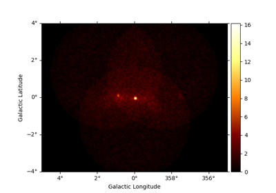

3D Cube#  3D detailed analysis 3D detailed analysis Basic image exploration and fitting Basic image exploration and fitting Multi instrument joint 3D and 1D analysis Multi instrument joint 3D and 1D analysis 3D map simulation 3D map simulation Event sampling Event sampling Sample a source with energy-dependent temporal evolution Sample a source with energy-dependent temporal evolution Flux Profile Estimation Flux Profile Estimation Computing flux upper limits Computing flux upper limits